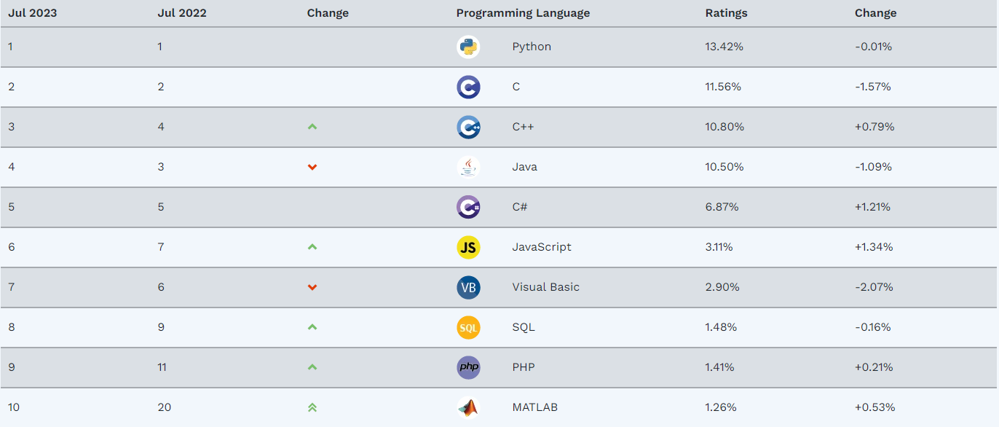

Los lenguajes de programación son la base para escribir instrucciones, órdenes y algoritmos. Lo que conocemos como código. Y con ese código hacemos funcionar máquinas físicas, dispositivos electrónicos, programas, aplicaciones y demás software. Vamos, que necesitamos lenguajes de programación para crear código y necesitamos código para comunicarnos con máquinas, ordenadores y aparatos en general.
Sea como fuere, resulta humanamente imposible conocer todos los lenguajes de programación. Se pueden dominar varios de ellos, pero para lograr ese dominio es necesario aprenderlos. ¿Por dónde empezar? ¿Qué lenguajes de programación deberías conocer si quieres ser programador, experto en análisis de datos o desarrollador web? Te damos la respuesta en tres rankings distintos que se complementan entre sí.
Índice TIOBE de lenguajes de programación
TIOBE. Es una empresa holandesa dedicada al análisis de código. Según ellos, cada día analizan más de 1.000 millones de líneas de código de desarrollos públicos y privados de empresas de todo tipo. Y además de eso son conocidos por confeccionar un índice con los lenguajes de programación más populares.
El índice se suele publicar en julio, buen momento para aprender lenguajes de programación nuevos. ¿Cómo realizan este análisis? A partir de las búsquedas detectadas en Google, Bing, Yahoo!, Wikipedia, Amazon, YouTube y Baidu. Con los resultados estipulan la popularidad de cada lenguaje y ofrecen un ranking de popularidad. Es decir, qué lenguajes buscan los programadores y las empresas.
El índice TIOBE también incluye otros lenguajes que no están en el top 10, pero que tienen un interés relevante o una tendencia al alza. Algunos ejemplos son Rust, que ocupa el puesto 17 y es el lenguaje más rápido en crecer, COBOL, que vuelve al top 20 después de mucho tiempo, y Julia, que se acerca peligrosamente al top 20.
El índice TIOBE es una herramienta interesante para conocer el panorama actual de los lenguajes de programación y sus perspectivas de futuro. Sin embargo, hay que tener en cuenta que el índice no mide la calidad o la cantidad de código escrito en cada lenguaje, sino su popularidad entre los desarrolladores y las fuentes disponibles. Por lo tanto, no se debe tomar el índice como una verdad absoluta, sino como una referencia orientativa.